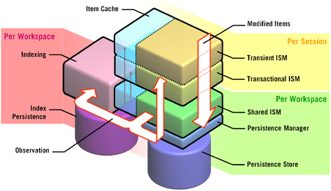

How Jackrabbit works
The diagram on the left explains which components of the Jackrabbit are used when a user of the JCR API modified content in the content repository. This is a simple and very common operation, that touches a large portion of the components in the Jackrabbit implementation. Please keep in mind that this implementation architecture is not mandated by JCR, but has been designed from scratch based on JCR.

The used components and their respective functions in the order of their appearance in the use case of writing or modifying content in the content repository:
- Transient Item State Manager Once content items are read by a session they are cached in the Transient Item State Manager. When those items are modified the modification is only visible to that same session, in the so-called "transient" space.
- Transactional Item State Manager When the Application persists the modified items using the JCR Item.save() or Session.save() the transient Items are promoted into the Transactional ISM. The modifications are still only visible within the scope of this transaction, meaning that other sessions will not see the modification until they are committed. The commit is implicit if the Content Repository is not running in an XA environment.
- Shared Item State Manager Once a transaction is committed the Shared Item State Manager receives the changelog and publishes the changes to all the sessions logged into the same workspace. This means that all the Item States that are cached and referenced by other sessions are notified and possibly updated or invalidated. The Shared Item State Manager also triggers the observation and hands the changelog over to the persistence manager that is configured for this workspace.
- Persistence Manager The Persistence Manager persists all the Item States in the changelog passed by the Shared ISM. The persistence manager is a very simple, fast and transactional interface that is very low-level and does not need to understand the complexities of the repository operations, but basically just needs to be able persist and retrieve a given item based on its item id.
- Observation When a transaction is committed the Shared Item State Manager triggers the Observation mechanism. This allows applications to asynchronously subscribe changes in the workspace. Jackrabbit also non-standard offers a synchronous observation.
- Query Manager / Index Through a synchronous observation event the Query Manager is instructed to index the new or modified items. A content repository index is much more complex than a classical RDB index since it deals with content repository features like the item hierarchy, nodetype inheritance or fulltext searches.